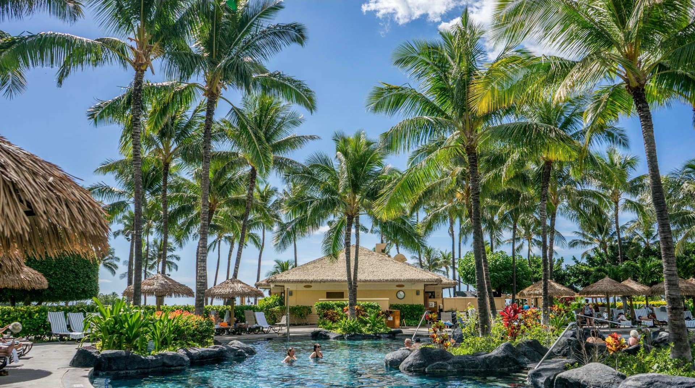
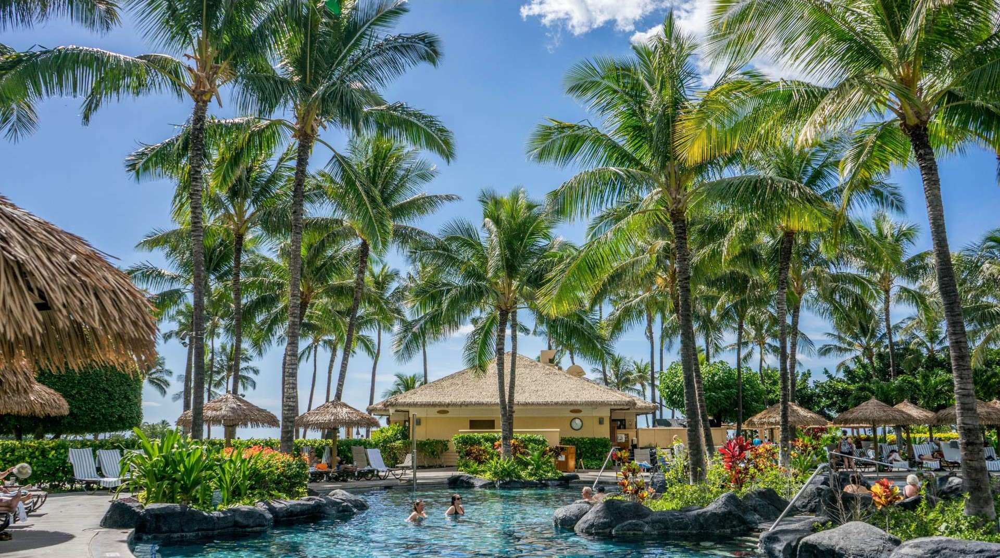

Hová szeretnél utazni?
5 kihagyhatatlan hely, ha Cypruson jársz
Ha Cyprus mellett döntünk a nyaralásunk során, kétség kívül nehezen lőhetünk mellé. Sajátos tengerpartjainak, változatos látképének elbűvölő ereje van de vannak látványosságai, amit hiba lenne kihagyni ...
ElolvasomA Chalkidiki félsziget legszebb tengerpartjai
A három lábú félsziget nagyon népszerű turistalátványosság, gyönyörű városai, természeti képződményei, turisztikai célállomásai okkal vonzzák az idelátogatókat. Tiszta vizei a búvárkodni vágyók ...
ElolvasomOlaszország 5 legjobb búvárhelye kezdőknek
Gondolkodtál már azon, hogy szabadtüdős merüléssel vagy könnyűbúvár felszereléssel merülj alá csodaszép tengerpartok habjai alá, hogy megcsodáld a meseszép vízivilág csodáit? Itt van 5 olaszországi hely, ahol ...
ElolvasomKanári-szigetek, Tenerife
A Kanári-szigetek legnagyobbika, ahol akár télen is nyaralhatunk Spanyolországhoz tartozik, habár onnan 1000 km-re esik Afrika mellett. A sziget igazi turistaparadicsom számos utánozhatatlan ...
ElolvasomA karneválok királya, görög módra
A Kanári-szigetek legnagyobbika, ahol akár télen is nyaralhatunk Spanyolországhoz tartozik, habár onnan 1000 km-re esik Afrika mellett. A sziget igazi turistaparadicsom számos utánozhatatlan látványosságtól egészen ...
ElolvasomInspiráció azok számára, akik nem tudják még, hogy hová utazzanak
 
